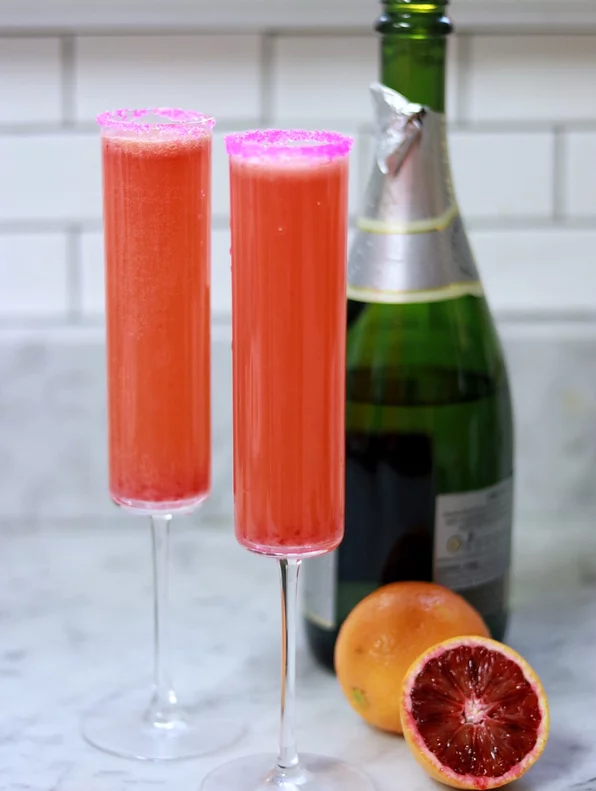

Blood Orange Mimosa

Description
Great blood orange-pineapple mimosa for any lazy morning.
Ingredients
- ½ cup pink sanding sugar, or as needed
- 1 (750 milliliter) bottle brut Champagne
- ½ cup pineapple juice
- ½ cup blood orange juice
- 2 fluid ounces orange liqueur (such as Grand Marnier®)
Steps
- Dip the rims of 4 champagne flutes in water. Dip into sanding sugar to coat the rims.
- Divide Champagne among the flutes. Pour 2 tablespoons
pineapple juice and 2 tablespoons blood orange juice into each. Top mimosas with orange liqueur.
Click here to go home